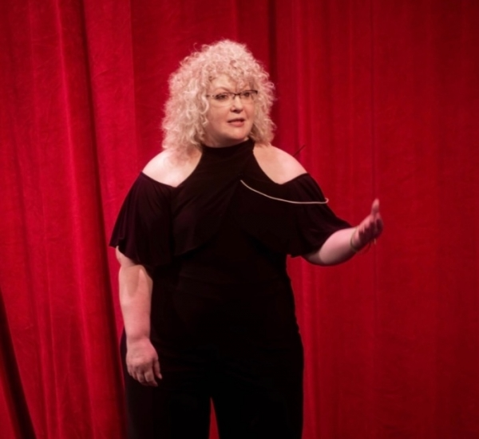
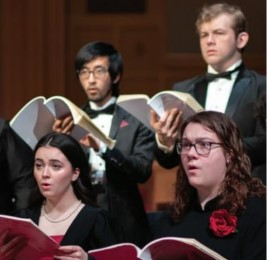
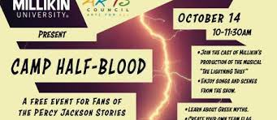
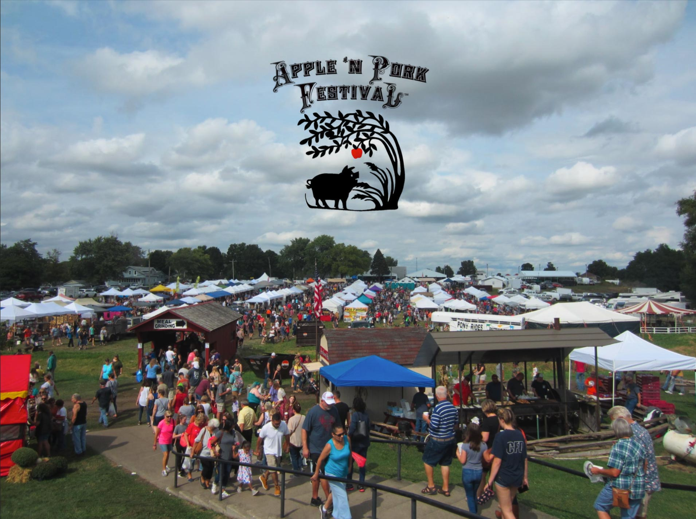

Fall Activities for Millikin Students
Fall Harvest Festival
Saturday October 14th @ 1-4pm
-Rock Springs Nature Center
Celebrate fall at Rock Springs Nature Center with fall-themed activities including archery, canoeing, pumpkin painting, wagon rides, tours at Homestead Prairie Farm, and more.

Patricia Griffin
Sunday October 1st @2pm
-Decatur Civic Center
Attend Patricia Griffin's comedy act in Decatur, tickets to her show can be found on Vivid Seats and start at $43.

Vocal Festival Finale
Monday September 25th @4:30pm
-Kirkland Fine Arts Center
Finale performance of the University Choir and Millikin Vocal Festival Choir.
Millikin’s Vocal Festival brings together over 200 high school students for a choir festival like none other. Join us for the culmination of the festival featuring the winners of our Solo Voice Competition, Festival Choir, and the Millikin University Choir.

Camp Half-Blood- A Percy Jackson Event
Saturday October 14th
-125N Water St, Decatur, IL
Millikin production of Camp Half-Blood based on the bestselling novel "The Lightning Thief," by Rick Riordan/ Free but requires advanced registration.

Apple 'n Pork Festival
Saturday September 23rd @ 11 am- Sep 24 7 pm
- Dairy Queen Grill and Chill, Clinton
This event features a lush draw of gourmet foods and artisanal goods while celebrating the long heritage of the farm as well as the gastronomic joys of apples and pork. Visitors can also enjoy live entertainment, crafts, historical presentations, and delectable pork meals, not to mention freshly harvested apples.

Macon County Fair Harvest Festival
Friday October 13th @ 5-10pm
-Macon County Fair and Event Facilities
Carnival rides, hay rides, shopping and food vendors.

Frankenstein Slept Here
Friday October 27th @ 4:30- 7pm
- The Wagon
Halloween-themed dinner theatre experience!